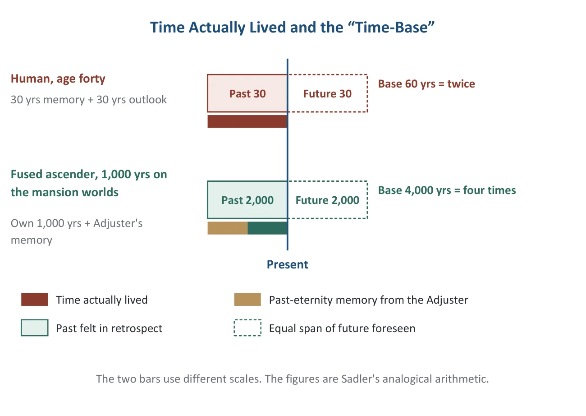

Le commencement de l’antithèse finale
Original : L’Histoire finale, chapitre XI, Commencement de l’antithèse finale (pp. 101–109)
DANS CE CHAPITRE
L’âge post-ultime commence dans le temps mais ne finit jamais, et en son sein une période succède à l’autre sans limite, chaque but atteint en ouvrant un plus lointain. Sadler soutient que les mortels ne plongent pas d’un seul coup dans l’éternité et l’infinité, mais s’y adaptent lentement. Il illustre la croissance du sens du temps par une simple arithmétique et dépeint l’adaptation à l’infinité par une histoire de football. Trois fois, soutient-il, Dieu a créé un nouveau besoin en retirant quelque chose ; à la fin, il présente le Cosmos Infini, un royaume vidé de toute possibilité d’expérience finie et absonite, comme l’antithèse finale.
1. Là où disparaissent les repères (orig., p. 101)
En commençant à étudier l’antithèse finale, Sadler perd pour la première fois ses repères familiers. Il a franchi la frontière du niveau d’espace le plus extérieur et dépassé la fin du sixième âge de l’univers. Pour les évènements situés au-delà du maitre univers, même les Maitres Architectes ne peuvent plus montrer le chemin. Il commence donc par forger un vocabulaire pour des temps et des lieux incommensurablement éloignés de l’ici et du maintenant.
De même que ce qui suit l’apparition de la création centrale dans l’éternité est appelé « post-havonien », Sadler a appelé « post-suprême » ce qui vient après l’achèvement du grand univers et l’émergence du Suprême. Il appelle maintenant « post-ultimes » les évènements qui suivent l’extériorisation finale de Dieu l’Ultime.
2. L’âge post-ultime (orig., pp. 101–102)
Qu’est-ce qui a changé ?
Les âges de l’univers diffèrent en quantité : du deuxième au sixième, ils deviennent de plus en plus longs. Certains diffèrent aussi en qualité. Le deuxième âge est le seul âge de croissance suprême, et les quatre âges de l’espace extérieur se ressemblent en ce qu’ils sont des âges post-suprêmes, des âges de croissance expérientielle de l’Ultimité. L’âge post-ultime est nouveau et qualitativement différent de tout ce qui l’a précédé. Sadler compte sept différences :
- Le maitre univers a achevé sa croissance.
- La Suprématie a parachevé sa croissance post-finie (absonite).
- La première Trinité expérientielle est pleinement unifiée.
- Dieu l’Ultime s’est finalement extériorisé.
- La deuxième Trinité expérientielle est devenue factuelle.
- Le potentiel de croissance absonite est épuisé.
- La recherche absonite du Père dans son aspect ultime est terminée.
Un dernier âge sans fin
Il y a encore une différence : cet âge semble n’avoir aucune fin dans le temps. Sadler propose de l’appeler l’Âge Final, et à cet égard il est le reflet du premier âge. Le premier âge, sans commencement dans le temps, se termine néanmoins dans le temps ; l’Âge Final commence dans le temps mais n’a pas de fin dans le temps. Tous deux sont des âges éternels.
Un âge éternel, insiste Sadler, n’a pas besoin d’être une « tache grise » uniforme s’étendant à jamais. Il trouve un indice dans l’histoire planétaire. L’histoire d’un monde habité se divise en sept époques mortelles, et la dernière, l’ère de lumière et de vie, semble se poursuivre sans fin. Un examen plus attentif du texte montre cependant que cette ère aussi se divise en sept stades.
Ceci n’est que le premier des ajustements administratifs accompagnant le déroulement des âges successifs d’aboutissements de plus en plus brillants sur les mondes habités passant du premier au septième stade d’existence ancrée.55:4.3
Sadler conjecture que le septième stade, examiné de près, se diviserait lui-même en sept sous-stades, et que l’âge post-ultime sera construit de la même manière. Chaque période a un commencement, une fin et des buts réellement accessibles. Seule la toute dernière période d’une série ne se referme pas ; elle lance au contraire une nouvelle série de stades de croissance et pointe vers un horizon plus vaste et plus neuf, un peu comme un alpiniste qui, ayant atteint un sommet, en voit un plus élevé se dresser au-delà.
3. L’adaptation à l’éternité (orig., pp. 103–104)
La qualité et la quantité de l’éternité
Le Livre d’Urantia enseigne que les mortels ascendants deviennent des « enfants de l’éternité » après le sommeil de transit final entre le circuit intérieur de Havona et le Paradis.
Parmi tous ceux qui s’élèvent à l’Ile éternelle, seuls ceux qui arrivent ainsi sont les enfants de l’éternité…26:11.6
Sadler y voit une belle introduction à la qualité de l’éternité, mais une base insuffisante pour en saisir la quantité. Le sens de la quantité de l’éternité, croit-il, se déploie graduellement dans la conscience des mortels, des ascendeurs et des finalitaires, et ce processus commence ici et maintenant.
La base de temps : double et quadruple
Sadler distingue le temps objectif, mesuré par l’horloge, du temps subjectif, ressenti dans la conscience. Le temps de l’horloge avance toujours au même rythme. Le temps subjectif se traine dans l’ennui et file dans la joie. Sous ces fluctuations quotidiennes, il y a aussi une dérive à long terme : plus on vit longtemps, plus le temps semble passer vite. Pour un enfant de dix ans, des vacances d’été sont une petite tranche d’éternité ; pour un homme de quarante ans, trois mois sont courts.
Sadler l’établit par l’arithmétique. Quelqu’un qui a dépassé la quarantaine peut se retourner sur au moins trois décennies avec mémoire et sentiment. Une personne qui peut ressentir une telle part du passé peut aussi, raisonne-t-il, se projeter par le sentiment dans une durée égale de l’avenir. La « base de temps » à laquelle le présent est rapporté devient alors de soixante ans : trente en arrière et trente en avant. La capacité de manier le temps croit donc deux fois plus vite que le temps ne passe réellement. Le Livre d’Urantia relie de même la maturité à l’échelle de la conscience du temps.
Il existe, dans tout intellect donné, une relation directe entre la maturité et la conscience d’une unité de temps.118:1.3
Ce que Sadler trouve frappant, c’est qu’après la fusion avec l’Ajusteur ce rapport devrait encore doubler. Selon le texte, l’Ajusteur apporte à l’ascendeur fusionné l’expérience et la mémoire de l’éternité passée.
Parmi ces nouvelles dotations, on peut mentionner : la fixation de la qualité de divinité, la mémoire et l’expérience de l’éternité passée, l’immortalité et une phase d’absoluité potentielle qualifiée.112:7.1
Lors de la fusion, un passé sans fin s’ouvre soudain devant le nouvel ascendeur. Sadler suppose que l’ascendeur ne peut assimiler cette mémoire qu’en proportion de la durée qu’il a consciemment vécue. Celui qui a passé mille ans sur les mondes des maisons pourrait assimiler mille autres années de la mémoire de l’Ajusteur. Il ressentirait alors deux-mille ans de passé et regarderait en avant sur deux-mille ans d’avenir, soit une base de temps de quatre-mille ans, quatre fois les mille ans qu’il a réellement vécus.

Non pas prisonnier du présent
La théorie de Sadler est la suivante. Une créature finie est liée au temps exactement dans la mesure où elle est entièrement confinée dans le moment présent. Lorsque nous tirons de l’expérience du passé, prévoyons les conséquences de nos actes dans l’avenir et tissons les deux ensemble avec sagesse dans nos décisions présentes, nous commençons à nous affranchir du temps. Selon cette vue, un être humain échappe au temps deux fois plus vite que le temps ne s’écoule, et un ascendeur fusionné quatre fois plus vite.
Poussée à la limite, l’arithmétique se présente ainsi. À un million d’années d’âge, on aurait une base de temps de quatre millions d’années. À mille-milliards d’années, à peu près l’âge de la nébuleuse d’Andronover, mère de notre soleil, la base de temps serait de quatre-mille-milliards d’années. Au moment d’entrer dans l’âge post-ultime, après avoir vécu toute la durée que Sadler calcule pour le maitre univers, on pourrait embrasser quatre fois cette durée. Si notre compréhension du temps croit quatre fois plus vite que le temps lui-même, alors, avec assez de temps, même la quantité de l’éternité pourrait devenir partiellement compréhensible, ou du moins beaucoup moins intimidante. Telle est la conclusion de Sadler.
…Mais, à mesure que l’homme s’élève, qu’il progresse intérieurement, le panorama de cette procession d’évènements s’agrandit de sorte qu’il en discerne de mieux en mieux l’ensemble.130:7.5
L’arithmétique de Sadler est une analogie
Les chiffres deux et quatre ne sont pas révélés. Sadler lui-même assortit tout le calcul d’un « si » concernant la valeur de son raisonnement. L’intérêt de l’arithmétique n’est pas la précision, mais la direction. L’éternité n’est pas une pièce dans laquelle on entre par une porte un jour donné ; c’est un pays qui devient peu à peu familier à mesure qu’une part plus grande du passé et de l’avenir est tissée dans le présent. Cela va dans le même sens que l’enseignement selon lequel la simultanéité circulaire remplacera de plus en plus la conscience de la séquence linéaire [130:7.5].
4. Franchir les anciennes limites (orig., pp. 104–105)
Une croissance expérientielle au-delà du niveau ultime signifie franchir toutes les limites antérieures de croissance. Sadler fait remarquer que c’est la troisième percée de ce genre, et qu’à chaque fois Dieu a établi un nouveau besoin dans un nouveau domaine d’expérience en « soustrayant » quelque chose des conditions existantes.
| Défi | Ce que Dieu a retenu | Qui a été mis au défi | Limite transcendée |
|---|---|---|---|
| Post-havonien | La perfection originelle, dans les superunivers | Les êtres parfaits du Paradis et de Havona | Limite de la perfection originelle → croissance évolutionnaire ajoutée |
| Post-suprême | La possibilité d’expérience finie, dans l’espace extérieur | Les citoyens du grand univers | Limite de la croissance finie → croissance absonite |
| Post-ultime | La possibilité d’expérience finie et absonite, dans le Cosmos Infini | Les citoyens du maitre univers achevé | Limite de la croissance relative → croissance absolue |
Sadler s’attend à ce que le troisième défi soit la perspective du Cosmos Infini. Ses êtres natifs seraient incapables d’expérience finie aussi bien qu’absonite. L’effort pour compenser ce manque est l’Aventure Absolue elle-même, et au cours de celle-ci les citoyens du maitre univers entreraient dans une croissance de type absolu.
Les trois cas partagent une même forme. Dieu place un défi devant ceux qui demeurent dans un univers nucléaire ; ils y répondent en servant et en exerçant un ministère dans un nouveau domaine extérieur et cytoplasmique ; et ce faisant, ils dépassent l’ancienne limite. Retirer quelque chose semble créer une déficience, mais aux yeux de Sadler, la place vide est précisément celle où se produit la croissance suivante.
5. La capacité des finalitaires (orig., pp. 106–107)
Quelle perspective attend les finalitaires dans un âge post-ultime, lorsque la croissance finie et la croissance absonite seront toutes deux terminées ? Au deuxième âge, ils ont appris à connaitre le Père de manière finie ; au cours des quatre âges post-suprêmes, ils en ont fait l’expérience de manière ultime. Toute croissance relative étant achevée, la seule croissance qui pourrait subsister est absolue.
Sadler juge la perspective brillante. Les preuves dans le texte ne sont pas abondantes, dit-il, mais elles suffisent à soutenir cette vue, et elles reposent sur deux fondements. Premièrement, le finalitaire possède la personnalité, un don de Dieu. La personnalité peut s’exprimer et croitre aux niveaux fini et absonite et, bien qu’elle ne puisse englober le niveau absolu, elle peut y pénétrer et y croitre. Deuxièmement, le finalitaire est fusionné avec un fragment de Dieu. Comme on l’a déjà noté, l’Ajusteur apporte « une phase d’absoluité potentielle qualifiée » [112:7.1] : une qualité latente au moment de la fusion, qui n’est pas immédiatement manifeste, mais qui se réalisera certainement dans un avenir lointain.
Sadler en déduit que cette absoluité est limitée dans la quantité de son expression extérieure d’elle-même, mais non dans la qualité de sa réalisation intérieure d’elle-même. C’est la même distinction que fait le Livre d’Urantia au sujet de la fonction de l’Absolu Trinité.
Et il semblerait aussi que l’inconditionné soit aussi illimité, du moins d’un point de vue qualitatif, bien que nous n’en soyons pas aussi surs en ce qui concerne les relations quantitatives.106:6.4
Puisque les deux dons, la personnalité et l’Ajusteur, viennent de Dieu, il n’est pas déraisonnable d’attribuer à tous deux un potentiel de croissance absolue. Sadler conclut donc que les finalitaires peuvent continuer à croitre dans l’âge post-ultime, que rien ne peut arrêter cette croissance et que, quantitativement, ils n’auront jamais fini d’y croitre. Leur destinée est absolue en qualité mais non infinie en quantité : chercher Dieu en tant qu’Absolu sans jamais connaitre tout Dieu en tant qu’Absolu. Toujours plus, à jamais plus, mais jamais tout. Le texte décrit ainsi le parcours suivant des finalitaires :
Étant finalitaires, il semble qu’après avoir atteint l’Ultime, il n’y ait qu’une voie à suivre, celle de commencer la recherche de l’Absolu.118:2.2
6. Le Cosmos Infini : un cytoplasme sans fin (orig., p. 107)
Si Havona forme le noyau du grand univers, et si ce domaine plus vaste forme à son tour le noyau des quatre niveaux de l’espace extérieur, de quoi le maitre univers est-il le noyau ? La réponse de Sadler est un possible Cosmos Infini, un cytoplasme sans fin et l’antithèse finale. Ce cytoplasme devrait être différent de tout ce qui l’a précédé, depuis les circuits de Havona jusqu’au niveau d’espace quaternaire. Si l’univers central est précréatif et le maitre univers créatif et évolutif, suggère Sadler, le dernier univers d’infinité pourrait être « supercréatif ».
Si nous admettons l’hypothèse d’un cosmos-infini — une sorte de cosmos illimité dépassant le maitre univers — et si nous concevons que les développements finals de la Trinité Absolue auront lieu à un tel stade superultime d’action, …106:6.3
Sadler conjecture que cet univers sans fin sera expérientiel et pourtant post-fini et post-absonite, et peut-être à la fois existentiel et expérientiel. L’idée n’est pas étrangère au texte, qui décrit l’Absolu de Déité précisément en de tels termes.
L’Absolu de Déité est expérientiel en actualisation mais existentiel en potentialité.0:7.5
La notion d’un univers sans fin se heurte-t-elle à l’idée que l’espace est limité à un moment donné ? Sadler répond que les deux peuvent être conciliées si l’on suppose que l’espace s’étend plus vite que la création. Que l’espace s’étende au-delà des limites présentement connues du maitre univers est certain. Le Livre d’Urantia dit peu de choses de cet univers d’un avenir lointain, mais, au jugement de Sadler, son apparition finale est clairement en vue.
Terme : Cosmos Infini
Le « Cosmos Infini » (Cosmos Infinite) de Sadler vient du terme « cosmos-infini » (cosmos-infinite) du Livre d’Urantia (106:6.3, 106:7.4). Dans le texte, cependant, le mot ne désigne qu’hypothétiquement un cosmos illimité au-delà du maitre univers. C’est Sadler qui en fait une création finale définie et le dote de majuscules comme un nom propre. Ce livre garde sa forme à majuscules lorsqu’il parle de sa construction, et la forme à trait d’union lorsqu’il cite le texte.
7. L’adaptation à l’infinité : la parabole du terrain de jeu (orig., pp. 107–109)
Sadler s’attend à ce que l’adaptation à l’infinité, comme l’adaptation à l’éternité, soit graduelle. Personne ne regardera un jour l’espace rempli d’étoiles pour se dire soudain : « Voilà donc l’infinité. » L’infinité devient au contraire familière peu à peu, à mesure que l’on remarque les jalons qui marquent le passage du fini au superfini. Des mots tels qu’absolu, éternel et infini n’ont pour nous aucune signification réelle. Plutôt que de se noyer dans un flot de termes pesants, mieux vaut acquérir ne serait-ce qu’un petit sentiment de la vérité, quitte à sacrifier quelque peu les faits. Sadler offre donc une histoire en guise de « concept-symbole ».
En bref, l’histoire est la suivante. Un étudiant, après un long entrainement, devient titulaire dans l’équipe de football et marque l’essai de la victoire lors du grand match. Ensuite, l’entraineur le conduit sur le terrain plongé dans l’obscurité et allume les projecteurs. La ligne de but qu’il a franchie se révèle n’être que la ligne de départ d’un terrain de dix-mille yards qui s’étend plus loin que ne porte le regard.
L’entraineur lui dit qu’il peut rester sur l’ancien terrain et aider les joueurs plus jeunes jusqu’à ce qu’il se sente prêt. Pendant un temps, il se plait à être assistant, mais à la fin la curiosité l’emporte sur le contentement. Il rejoint l’équipe du grand terrain et, après une lutte bien plus longue, il marque de nouveau. Lorsque l’entraineur lui dit qu’il a encore quelque chose à lui montrer, le jeune homme demande le premier : celui-ci fait-il un million de yards ? L’histoire se termine sur l’entraineur qui lui demande comment il le savait.

Tel que le présent commentateur la lit, l’histoire renferme trois significations. La ligne de but est toujours la ligne de départ du terrain suivant, à l’image de la structure des périodes post-ultimes. Le nouveau terrain n’est jamais imposé à personne, et, avant d’aller plus loin, le héros aide ceux qui viennent après lui, exactement comme les citoyens d’un noyau servent la génération suivante avant de partir vers l’extérieur. Et la deuxième surprise est moindre que la première. S’adapter à l’infinité, suggère la parabole, ne signifie pas la mesurer tout entière, mais grandir en se sentant chez soi parmi des terrains qui continuent à s’ouvrir sans fin.
Points clés
- L’âge post-ultime est un Âge Final qui commence dans le temps mais n’a pas de fin, l’image inversée du premier âge.
- Un âge éternel n’a pas besoin d’être monotone : comme la lumière et la vie avec ses sept stades, il se déploie en périodes aux buts accessibles, la dernière de chaque série ouvrant une nouvelle série.
- Sadler soutient que le sens de la quantité de l’éternité croit graduellement, et calcule qu’un être humain a une base de temps double du temps vécu et un ascendeur fusionné une base quadruple ; c’est un raisonnement analogique, non une révélation.
- Trois fois, Dieu a ouvert de nouveaux besoins et une nouvelle croissance en retenant quelque chose : la perfection originelle, l’expérience finie, et l’expérience finie et absonite ensemble.
- Grâce à deux dons, la personnalité et l’Ajusteur, les finalitaires continuent à croitre après l’Ultime, vers une destinée absolue en qualité mais sans fin en quantité.
- La parabole du terrain de jeu montre que l’adaptation à l’infinité est une lente accoutumance, un nouveau terrain s’ouvrant au-delà de chaque ligne de but.